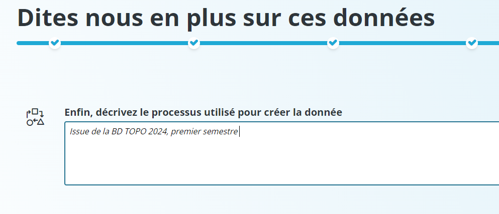

L’intégration de données - page Import
Introduction
La page Import permet d’intégrer des données de manière simplifiée dans le catalogue.
{kind=link}
Deux format sont acceptés, le shapefile en zip et le CSV, à une limite de 500 Mo. Vous pouvez ajouter votre donnée, cliquer sur le bouton « J’ai le droit de publier cette donnée » puis passer à l’étape suivante. Une bonne pratique est de ne pas mettre de caractères spéciaux dans le nom des champs des couches shapefile, cela peut causer des problèmes par la suite.
Intégration de shapefile
Les particularités d’un shapefile est la projection et l’encodage:
{kind=link}
Pour bien renseigner la donnée, assurez vous que le carré orange qui represente l’emprise de votre donnée est au bon endroit et qu’une projection est renseignée. De même pour l’encodage, si votre exemple d’objet possède des carractères illisibles, vous pouvez changer l’encodage.
Note
Si pour une donnée, aucune projection n’est valide, veuillez le faire remonter au service informatique.
Intégration de CSV
La particularité d’un CSV est la geométrie :
{kind=link}
Pour bien renseigner la donnée, vous pouvez choisir le séparateur de colonne, de texte et aussi renseigner une geométrie ou non. Pour ajouter une geométrie, il faut obligatoirement un champ latitude et longitude dans le bon format comme sur la photo ci-dessus.
Processus d’intégration
Vous pouvez ensuite ajouter un titre et une description :
{kind=link}
Pour l’ajout de mots clés, ils sont prédéfinis dans un catalogue de mots clés, le catalogue de mots clés utilisé ici est le glossaire de l’Office internationale de l’eau. Pour faire apparaître la liste déroulante il faut cliquer sur le carré blanc, ou alors commencer à écrire un mot puis cliquer à la suite pour voir l’autocomplétion.
{kind=link}
Ensuite vient la date de création, elle se renseigne automatiquement mais vous pouvez la changer si la donnée est antérieur.
{kind=link}
En dernier, il faut décrire le processus de création de la donnée :
{kind=link}
Et vous avez un récapitulatif de votre intégration, cliquez sur « publier » pour intégrer la donnée dans le catalogue.
{kind=link}